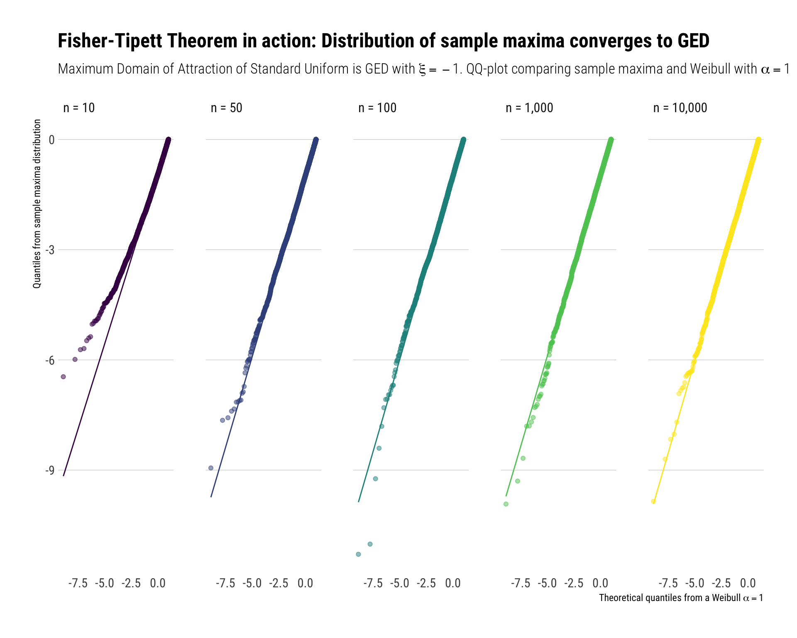

labels <- c(glue::glue("Fréchet, xi = 0.5"),
"Weibull, xi = -1",
"Gumbel, xi = 0")
n <- 10^4
data.frame(frechet = rgev(n, shape = 0.5),
weibull = rgev(n, shape = -1),
gumbel = rgev(n, shape = 0),
sim = 1:10^4) -> exploring_gedFor fat-tailed random variables, the statistical properties are determined by a few observations in the tail. In Nassim Taleb’s words, “the tail wags the dog”. Therefore, it is vital to study the distribution of these few observations. A logical question to ask, then, is: is there a limiting distribution for the sample maxima as the number of samples grows? This is precisely what the Fisher Tippet Theorem states: the limiting distribution of (a normalized) sample maxima is the Generalized Extreme distribution (GED).
In this blogpost, I’ll run Monte-Carlo simulations to show the Fisher-Tippet Theorem and its consequences.
The Fisher-Tippet Theorem
How to model the values at the tail? Model the sample maxima
You have \(n\) \(i.i.d.\) samples from a distribution: \(X_1, X_2, \cdots, X_n\). Define, for a given \(n\), the sample maximum \(M_n = Max(X_1, X_2, \cdots, X_n)\). The theorem states that if there are normalizing constants \(a_n\) and \(b_n\) such that the distribution of the sample maximum is not degenerate, then the limiting distribution of the normalized sample maxima is the GED. In math:
\[ \dfrac{(M_n - b_n)}{a_n} \xrightarrow[]d{} GED(\xi) \] So, the question remains: What is the \(GED(\xi)\)?
Getting to know the Generalized Extreme Distribution
The Generalized Extreme Distribution (GED) is really a way to describe with one shape parameter \(\xi\) three different distributions.
- When \(\xi > 0\), the distribution is a Fréchet.
- When \(\xi < 0\), the distribution is a Weibull.
- When \(\xi = 0\), the distribution is a Gumbel.
Let’s see how different these distributions really are through some Monte-Carlo simulations. I’ll generate 10^4 samples for each type of the distributions
Indeed, as can be seen from the plot, the GED encodes very, very different distributions. Therefore, the limiting distribution of the sample maxima can be very different. Most importantly, the Fréchet has a much longer and fatter tail than any of the distribution. Indeed, the Fréchet’s tail decreases just as a power law with tail exponent \(\alpha = \xi^{-1}\). That is, the Fréchet is fat-tailed and the higher the \(\xi\), the fatter the tail of the Fréchet.
The question is: what type of distributions have their sample maximum distributed as a Fréchet?
Any power law tail leads to the Fréchet
Unsurprisingly, fat-tailed distributions have fat-tailed distributed (normalized) sample maxima: i.e., their sample maxima have as a limiting distribution the Fréchet. In math slang, the the Maximum Domain of Attraction of any fat-tailed variable is the Fréchet, which itself is fat-tailed.
With Monte-Carlo simulations, we can see this. We will produce 10,000 experiments: each experiment has \(n\) random samples from a Pareto with \(\alpha = 2\). For each experiment, we get the maximum of the sample and we “normalize” it with \(a_n = n^{1/\alpha}\) and \(b_n = 0\). Then, we will see that these normalized sample maxima follow a Fréchet distribution with the same \(\alpha\) as the original Pareto random variable.
We will repeat these experiments for \(n = 10, 100, 1000\). The results can be seen in the following plot:
alpha <- 2
rpareto <- function(n) {
(1/runif(n)^(1/alpha)) # inverse transform sampling
}
crossing(experiment = 1:10000, n = c(10, 50, 100, 1000, 10000)) %>%
mutate(samples = map(n, ~ rpareto(.)), # sample
max_in_sample = map_dbl(samples, ~ max(.))) %>% # get the maximum
rowwise() %>%
mutate(max_in_sample_normalized = max_in_sample / n^(1/alpha)) -> sample_maximum_pareto # normalizeTo reiterate the result: we get sample maxima from power law distributions. These sample maxima themselves also follow a power law distribution with the same tail exponent as the tail exponent of the original random variable.
Light tails upper Bounded
For light-tailed random variables with an upper bound, their sample maxima will have as a limiting distribution the Weibull distribution That is, the \(GED(\xi < 0)\). Take for example, the standard continuous uniform on \([0, 1]\). We normalize the sample maxima with \(a_n = 1/n\) and \(b_n = 1\).
We repeat the same Monte-Carlo experiments as we did before. The results can be seen in the following plot:
crossing(experiment = 1:10000, n = c(10, 50, 100, 1000, 10000)) %>%
mutate(samples = map(n, ~ runif(.)), # sample
max_in_sample = map_dbl(samples, ~ max(.))) %>% # get the maximum
rowwise() %>%
mutate(max_in_sample_normalized = (max_in_sample-1) / (1/n) ) -> sample_maximum_uniform # normalizesubtitle <- TeX("Maximum Domain of Attraction of Standard Uniform is GED with $\\xi = -1$. QQ-plot comparing sample maxima and Weibull with $\\alpha = 1$")
xtitle <- TeX("Theoretical quantiles from a Weibull $\\alpha = 1$")
Thin-tailed variables: exponential tail
For thin-tailed variables, their sample maximum has as a limiting distribution the Gumbel case. That is, \(GED(\xi = 0)\). Take for example the Standard Normal (\(CDF = \Phi(x)\)). Their sample maximum will be normalized with \(b_n = \Phi^{-1}(1-1/n)\) and \(a_n = 1/b_n\).
We repeat the same Monte-Carlo experiments as we did before. The results can be seen in the following plot:
crossing(experiment = 1:10000, n = c(10, 50, 100, 1000, 10000)) %>%
mutate(samples = map(n, ~ rnorm(.)), # sample
max_in_sample = map_dbl(samples, ~ max(.))) %>% # get the maximum
rowwise() %>%
mutate(max_in_sample_normalized = (max_in_sample-qnorm(1-1/n, mean =0, sd = 1)) / (1/qnorm(1-1/n, mean =0, sd = 1)) ) -> sample_maximum_normal # normalizeNotice that convergence takes longer for the sample maximum coming from a normal than the convergence of sample maxima coming from other types of distributions. Thus, Nassim Taleb, in his latest technical book: Statistical Consequences of Fat Tails, recommends working with the exact distribution of the sample maxima, instead of working with the asymptotic approximation (i.e., the Gumbel).
Conclusion
When the tail wags the dog, the extreme are all that is worth studying. The Fisher Tippet theorem states what is the limiting distribution to model these type of events. That is, it tells us the limiting distribution the (normalized) sample maxima \(M_n\). Crucially, when the data is power law distributed, the sample maxima from these distribution will also be power law distributed. That is, the maximum domain of attraction of a power law is itself a power law.